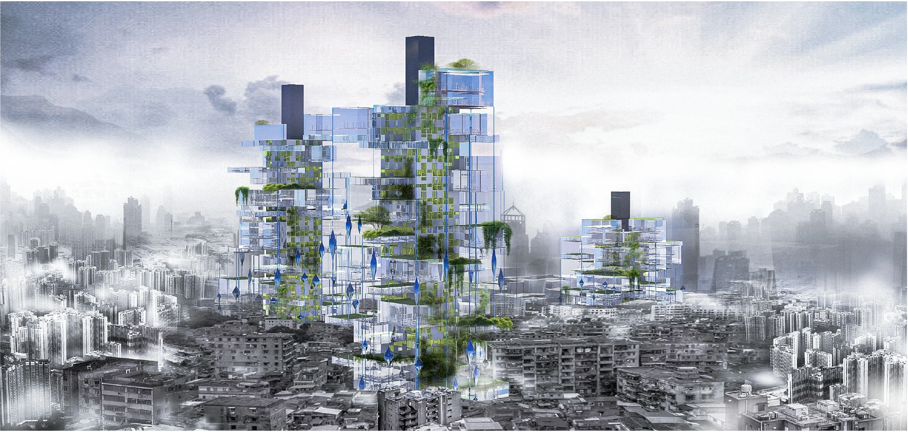
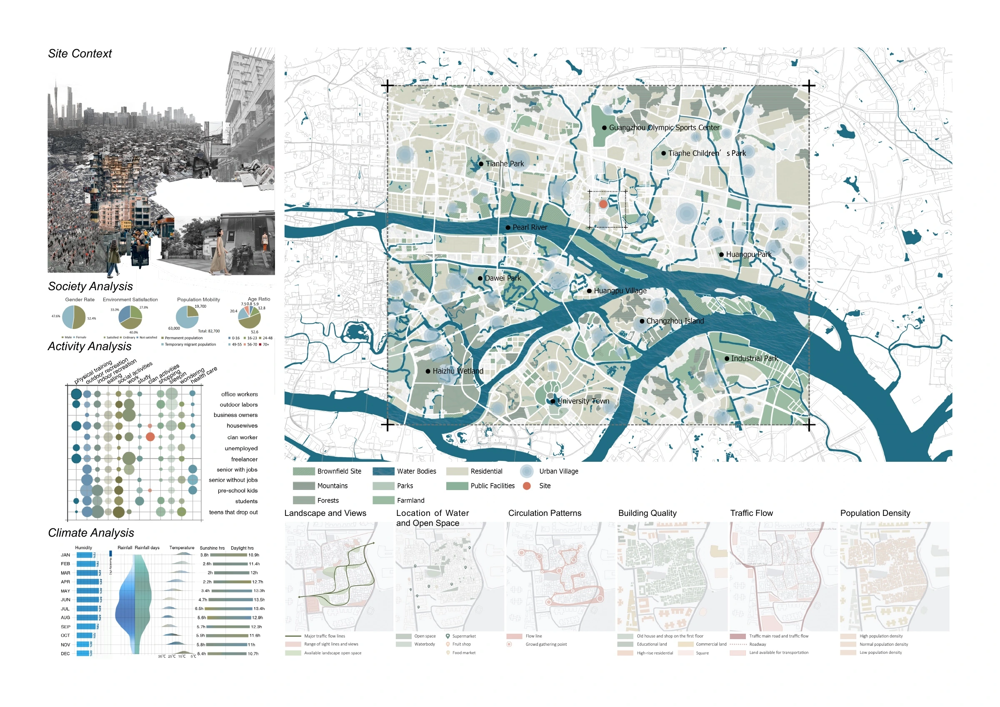
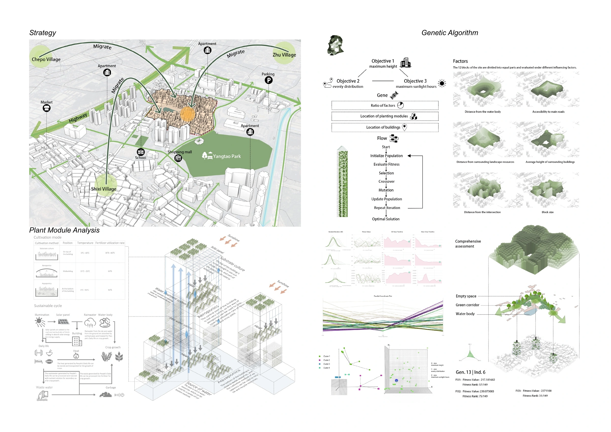
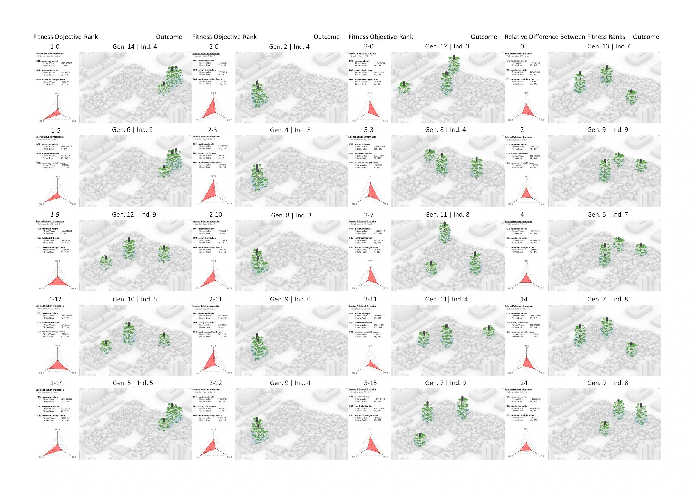
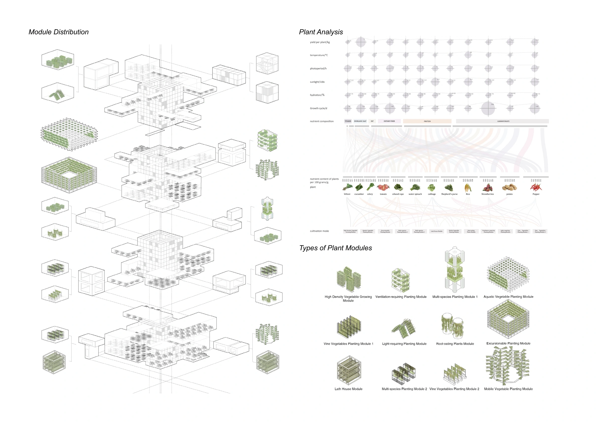
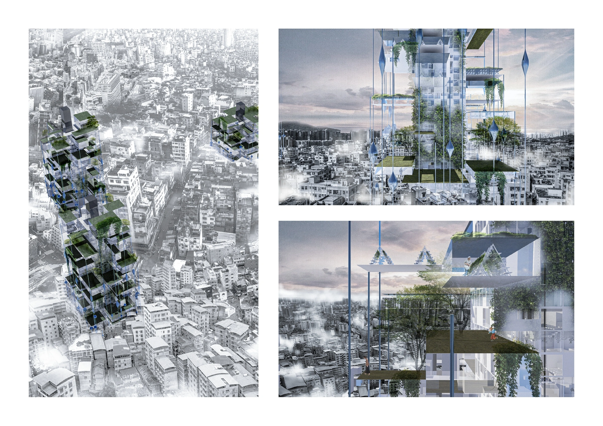

02 / Computational Design
Urban Green Infrastructure.
A computational strategy for vertical green infrastructure in high-density cities.
- Date
- October – November 2024
- Context
- Dalian University of Technology / Workshop
Group project - Methods
- Rhino, Grasshopper, Wallacei, genetic algorithms

Making room for an urban ecology
The proposal addresses the conditions of Guangzhou’s urban villages by combining resettlement housing with a modular planting system. Site mapping, activity analysis and climate studies establish the relationship between the existing urban fabric, residential needs, and ecological opportunities.
Grasshopper and Wallacei support the exploration and optimisation of high-rise massing and module distribution. Sunlight, airflow and spatial efficiency guide the computational process, while planting modules connect environmental performance with the everyday spaces of the housing proposal.
Project documentation
05 PLATES{kind=link}

{kind=link}

{kind=link}

{kind=link}

{kind=link}
